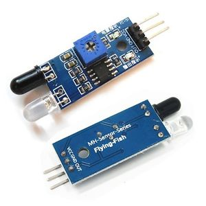
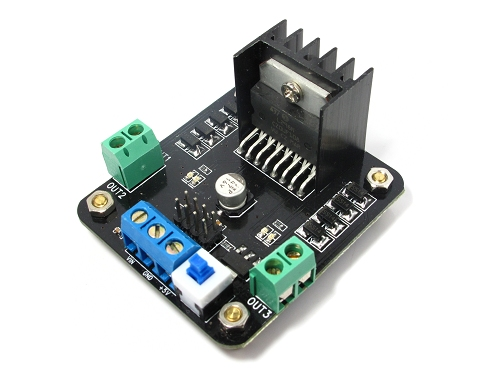

<!--
  Generated template for the ViewComponentsPage page.

  See http://ionicframework.com/docs/components/#navigation for more info on
  Ionic pages and navigation.
-->
<ion-header>

  <ion-navbar>
    <ion-title>Stores & Components</ion-title>
  </ion-navbar>

</ion-header>


<ion-content>

  <div>
  <ion-segment [(ngModel)]="components">
    <ion-segment-button value="Stores">
      Stores
    </ion-segment-button>
    <ion-segment-button value="Components">
      Components
    </ion-segment-button>
  </ion-segment>
</div>

<ion-searchbar>
[(ngModel)] = "myInput"
</ion-searchbar>

<ion-list>
    <ion-item>
      <ion-thumbnail item-start>
        
      </ion-thumbnail>
      <h2>IR sensor 16px </h2>
    <h3>  Sensors 14px </h3>
    <h4>  100 EGP 14px </h4>
    </ion-item>
    <ion-item>
      <ion-thumbnail item-start>
        
      </ion-thumbnail>
      <h2>ultrasonic sensor 16px </h2>
        <h3>  Sensors 14px </h3>
        <h4>  120 EGP 14px </h4>
    </ion-item>
    <ion-item>
      <ion-thumbnail item-start>
        
      </ion-thumbnail>
      <h2>H-bridge 16px</h2>
      <h3>  Motors 14px </h3>
      <h4>  150 EGP 14px </h4>
    </ion-item>
  </ion-list>


</ion-content>
